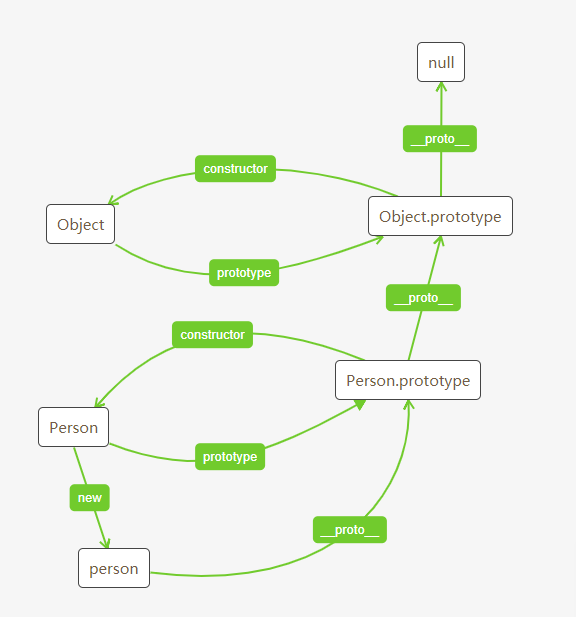

在声明一个函数时，每个函数都带有一个prototype，叫做原型对象。在这个原型对象里，包含了两部分：一个是constructor，一个是__proto__;
constructor 指向这个构造函数本身。
__proto__指向Object.prototype
Object本身又有prototype，也包括这两个属性。构造函数回指，__proto__指向为null
通过new方式，构造函数的实例对象，将会带有构造函数的属性,并且本身没有prototype，而是带有__proto__,
该属性指向构造函数的原型对象，所以构造函数的方法会挂载在这个属性上。
这样就形成一个链式结构，当在实例上查找属性或方法时，首先会在实例本身查找，没有找到就顺着原型链进行查找。一直找到null，还没有找到返回undefined
